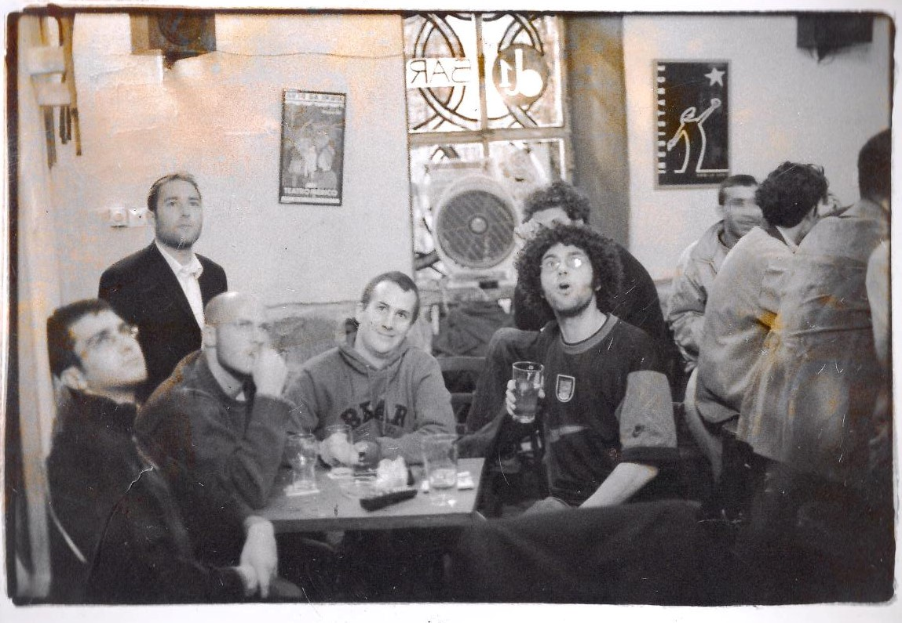
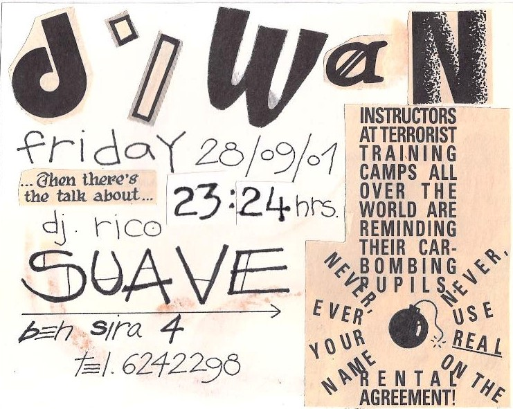
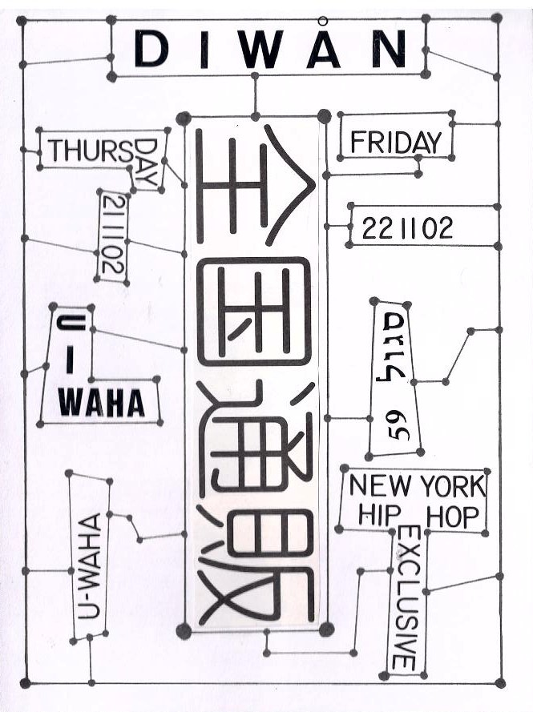
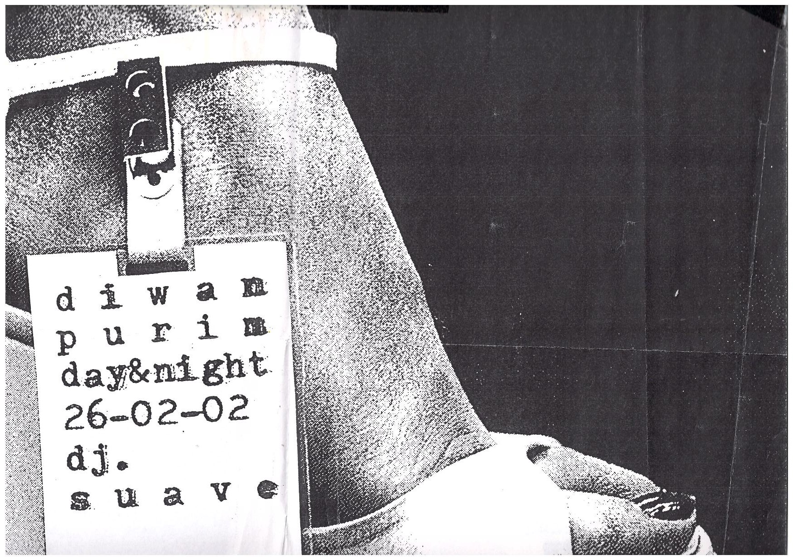
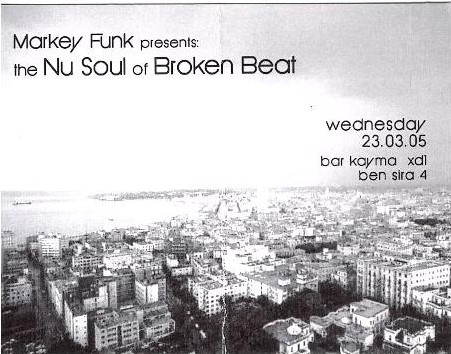

דיוואן
מקום
פריד בשארה, ממקימי הרוזה, פתח את הדיוואן ב־1999. לפני כן היה במקום בר בשם הכובען המטורף, שעבר לשם לאחר ששכן בנחלת שבעה (במקומו של הכובען המטורף נפתח הסטארדאסט). באותה תקופה לידיה מלטין, שעלתה לארץ ב־1997, נהגה לבלות במקום כל ערב לאחר שחבר בשם סואבה, דמות מוכרת בירושלים, שהיה השותף שלה במעונות האוניברסיטה, התלהב מהמקום ולקח אותה לשם. בקיץ 1999 פריד פנה אליה, מכיוון שהבחין שבילתה שם הרבה, והציע לה להתחיל לעבוד שם, כך להנות משתיה במחיר מוזל וגם להרוויח כסף. לידיה עזבה את הלימודים והתחילה לעבוד.

באוקטובר 2000 פרצה האינתיפאדה השנייה. פריד עזב את הארץ לאנגליה ולידיה ניהלה את הדיוואן במקומו עד סוף 2001, אז פריד רצה למכור את הבר. הוא הציע ללידיה לקנות אך היא סרבה. לאחר מכן בעקבות ערב ארוך עם חבר ובקבוק וודקה ונסיון שכנוע לאחר כל שוט היא התרצתה, כשהייתה רק בת 21. מ־2002 המקום היה בשותפות שלה ושל ישי הלפר, שעזב בהמשך השנה. זו היתה תקופה קשה בירושלים, והיא לא הצליחה לקבל רשיון עסק ובשלב מסוים גם לא ביטוח.
בסוף 2001 קרתה תקרית לא נעימה עם חבורה מהעיר העתיקה, שבזמן שלידיה לא נכחה הכו בחור מכות קשות. כשהיא הגיעה ראתה את החדר מוצף בדם וכל הלקוחות בהלם. אחרי כמה ימים אותם בחורים חזרו וביקשו לשתות, לידיה ניגשה אליהם ודרשה שלא יערכו קטטה בפנים. כדי להמנע מתגרה הם דרשו תשלום פרוטקשן. לידיה התיעצה עם פריד, ששלח אותה לחבר בעל מסעדה במזרח העיר. החבר שלח לדיוואן חבורה של עבריינים גרועים עוד יותר שכדי לשמור על המקום מפני החבורה הראשונה דרשו פרוטקשן גבוה יותר. כך במשך כמה חודשים ב־2002 לידיה וישי שילמו להם. בשלב מסוים החבורה השנייה דרשה כסף מלידיה והיא פשוט סירבה להם, הם הלכו, והדבר חזר על עצמו במשך יומיים ולאחר מכן הם לא הופיעו יותר. מסתבר שהחבורה הראשונה כנראה היו משת"פים של המשטרה ולכן המשטרה לא עזרה לדיוואן נגדם. ערב אחד חבר בשם מיכאל שעבד בסטודיו לקעקועים ביקר בבר וראה שהמצב של לידיה והבר לא טוב, והתעניין מה קרה. לאחר שסיפרה לו מיכאל, שהיה בחור גדול ומפחיד, עשה סצנה שבה איים שיקבור את מי שיתעסק עם לידיה. כך סילקו גם את החבורה הראשונה.
לאחר מכן המצב השתפר אך לידיה עדיין לא הצליחה לקבל רשיון עסק, בגלל קשיי הבירוקרטיה העירונית ודרישות חדשות מהפקיד שטיפל בעניינם בכל פעם שניסו, מה שנתן תחושה שהעיריה מתנגדת לרעיון של דו-קיום במרכז העיר.

פלאייר של הדיוואן, 2001

פלאייר לערב היפ הופ, 2002
במשך כל שנות הפעילות מרכז המשיכה לא היה האלכוהול אלא התוכן התרבותי. בכל ערב היה תוכן כגון תקלוט, הופעה או משהו אחר. פריד התחיל בנוהג לשלם לדיג'יים שמתקלטים, וזו תרבות שהתפתחה משם. הרבה מהפעילות במקום הייתה סביב מוזיקה, כשבימי ראשון עד שלישי היו מתקלטים מתחילים וברביעי עד שבת המקצועיים יותר. הרבה דיג'יים התחילו שם את דרכם, כגון אנה הלטה (פאקוטק), מארקי פאנק ויריב ברנשטיין. היו ערבים קבועים של הדאב פלאוורז, ערבי לייבל של אק דאק ופאקט רקורדס, ערבי ג'אז בהובלת עידו בוקרמן, בהיפ הופ מקלט מוצאי שבת שבו היו ראפרים כגון רוקי בי ואם סי קלין, וערבי אינדסטריאל של צחי פירו. בשנת 2000 תקלט שם הדיג'יי בני דה B, שנהרג בפיגוע בהר הצופים, והוריו תרמו למקום את הפטיפונים שלו. כך קרה שעמדות הפטיפונים המקצועיות היו באומן 17 ובדיוואן ומשום כך באו לשם לתקלט דיג'יים רבים. הפטיפונים משמשים עד היום את הסירה.
אחד מהאירועים היה ערב אקספרימנטלי שהתחיל כששלושה אנשים, אביעד אלברט (החזית האלקטרונית וטפט), נועם כוזר וסואבה התחילו לשחק במיקרופון ומיקסר ולעשות צלילים, וזה המשיך לערב קבוע שבו לרוב היו יותר אנשים על הבמה מאשר בקהל. אביעד היה מנווט את הערב עם מיקסר ענק שכולם היו מתחברים אליו, אנשים כגון הראל שרייבר ורוקי בי, ונועם וליאור וגו ערכו הקרנות וידיאו.
היו במקום מספר תערוכות, לדוגמה של צילומים של הפנתרים השחורים. סואבה צייר בתוך המקום ציור ענק על־פי טקסט של קורט וונגוט, כשהבד היה על הקיר במשך כל התקופה ואנשים שבאו יכלו לראות את הציור מתפתח.
בכל תקופת הפעילות הייתה תחושה שחייבים להמשיך את הפעילות התרבותית כי אין מישהו אחר, הסצנה הייתה מורכבת מ־100-300 איש שכולם בילו באותם מקומות והלכו להופעות ומסיבות זה של זה. למשל, היה ברור שכשנסגר המקום הולכים כולם למסיבה של פאקוטק. הייתה אווירה חזקה של קהילתיות ושמירה על החיים החילוניים והחופשיים בירושלים, אך גם תחושת חוסר ודאות שהשפיעה על אופי החגיגות כי אף אחד לא ידע האם ישרוד מחר או יהרג בפיגוע. האנשים חשו צורך במפלט ולכן היו שתיה רבה ושימוש בסמים. הדיוואן נחשב כמקום מוגן ובטוח (מלבד השנה הקשה שבה פחדו מהעבריינים), ואנשים הרגישו שמקבלים אותם והם בטוחים שם.
ב־2004 יצא חוק שחייב מקומות להעמיד בכניסה שומר חמוש על חשבונם. ללידיה לא היה כסף לשלם לשומר והרעיון גם נגד את אחד העקרונות בדיוואן בודקים את הבאים ושלא יהיה במקום נשק חם. בספטמבר 2004 קיבלו צו סגירה. הם סגרו את המקום ושיפצו אותו, הורידו את הטיח מהקירות וחשפו את האבן שממנה הם בנויים. חודש לאחר מכן המקום נפתח מחדש בסוד ובלי רישיון. מתוך כך נולד הרעיון לבר קיימא – עמותה שתפעיל את המקום כמועדון חברים וכך לא יהיה צורך ברישיון. אך הנסיון לפתוח את העמותה לא צלח מאחר שלא ציפו לקשיים שנתקלו בהם. היה עליהם לכתוב תקנון שנפסל בכל פעם ששלחו אותו לבדיקה. במרץ 2005 גילו שוב שהמקום פתוח. במסיבה האחרונה הגיע פקח מהעיריה, נועם דיבר איתו ואמר שזה האירוע האחרון שלהם, וב־6 בבוקר מישהו תקף את סואבה כי חשב שהוא סוכן סובייטי והוא הגיע לבית חולים.
שבוע אחרי כן נועם ולידיה ארגנו מסיבה ב"המעבדה" שהיה אולם הופעות בדרך חברון, היכן שהיום נמצאת התחנה הראשונה. המסיבה נמשכה 24 שעות כשבכל שעה הופעה או דיג'יי אחר והגיעו כ־800 איש. הרעיון היה לגייס כסף לפתיחה מחודשת של הדיוואן ולכסות חלק מהחובות שהיו ללידיה על המקום, שעדיין היה בבעלותה. אחרי המסיבה לידיה נסעה לסיני וכשחזרה קיבלה הצעת קניה מליאור גוטריימן. חודש לאחר מכן נפתח במקום הסירה, שהמשיך כמעט באותה מתכונת במשך השנים הבאות ופועל עד היום.

פלאייר, 2002

פלאייר, 2005 - תקופת הבר קיימא
מסיבות ביטחוניות
במשך תקופת הדיוואן התקיים גם פנזין בשם מסיבות בטחוניות – שהקים נועם כוזר והודפס במכונת הצילום של הזירה. הפנזין ריכז באופן שבועי את כל האירועים שתוכננו לאותו שבוע. נועם התקשר למקומות כדי להתעדכן, וכך גם הכיר את לידיה. לפני תחילתו של מסיבות בטחוניות אנשים לא ידעו אם הדיוואן ריק למשל כי היה פיגוע, או שיש מסיבה מקום אחר. נועם שכנע את הזירה שיש צורך בפנזין והם נתנו לו להשתמש במכונת הצילום שלהם. בתוך כמה שנים הפנזין הפך לאתר, בתחילה על מנת לרכז בו מידע באופן טכני ולאחר מכן כדי להציג את המידע על האירועים למשתמשים. האתר הגיע לכ־1000-2000 כניסות ביום, אך עם ההתחלה של פייסבוק ורשתות חברתיות אחרות הוא הפסיק למשוך אליו אנשים עד שנסגר. מגזין אף היה המשך טבעי ממסיבות בטחוניות, והיו אחת הקבוצות הראשונות בבר קיימא.